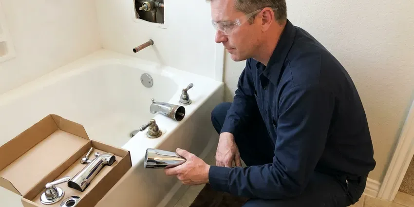

Shower Replacement in Bethany, OR
From a simple valve swap to a full shower rebuild, our plumbers replace showers throughout Bethany, OR with clear pricing and tidy work.
- Upfront Pricing
- Prompt, Local Service
- Fast, Efficient Service
- Quality Workmanship

Replace Your Old, Leaking Shower With Confidence in Bethany, OR.
Call JFL Plumbing today for a free estimate and professional service.
Professional Shower Replacement Services in Bethany, OR
JFL Plumbing specializes in complete shower replacement, from removing old units to installing brand-new systems. We make sure every installation meets local plumbing codes in Bethany, OR, providing a reliable and long-lasting upgrade for your home.
Our expertise includes:
- Full shower unit removal and disposal
- Full removal and installation of shower units.
- Old two- and three-handle valve replacement with anti-scald valves

Additional Bathroom Plumbing Services in Bethany, OR
From toilets to showers, our bathroom plumbing team in Bethany, OR repairs, installs, and replaces every fixture with clean, code-compliant work.


Customers
Why Choose JFL Plumbing for Shower Replacement in Bethany, OR?
Our team uses only high-quality materials and proven installation techniques to ensure your new shower not only looks great but also performs reliably for years to come.
- Damage Check, We inspect framing and subfloor for rot and mold before we rebuild.
- Local Expertise, We understand local Bethany, OR building codes and typical home plumbing systems.
- Transparent Pricing, You will receive a clear, upfront estimate before any work starts, with no hidden fees.
Citywide Coverage
From North Bethany to South Bethany, and every area in between, JFL Plumbing is your go-to for professional shower replacement. We make it easy for residents throughout Bethany, OR to get the quality service they deserve.
Experienced Team
Our team of licensed plumbers has broad experience with all types of shower replacement projects, from simple tub-to-shower conversions to complex custom installations. We stay current on the latest plumbing technologies and fixtures.
Safety-First Approach
New shower valves we install include anti-scald protection, and we set limit stops to a safe maximum temperature. That helps protect children and older adults from scalding.
Trusted Certified Bethany Plumbing Services Professionals
At JFL Plumbing, we take pride in providing certified plumbing services throughout Bethany, OR. Backed by recognized industry credentials, our experienced plumbers combine technical skill with genuine customer care. Whether it is repair, installation, or maintenance, we follow strict safety and quality standards to deliver long-lasting results you can trust.
Call Us Now PHCC Plumbing Contractor Recognition
PHCC Plumbing Contractor Recognition Better Business Bureau (BBB) Accreditation
Better Business Bureau (BBB) Accreditation Angi Certified Pro
Angi Certified Pro ISO 9001 Quality Management Certification
ISO 9001 Quality Management CertificationTrusted Shower Replacement Services in Bethany, OR
Replacing Showers for Hard Water Issues in Bethany, OR
Soft water can be slightly corrosive, which may lead to pinhole leaks in copper pipe and blue-green stains on fixtures. Hard water can cause mineral buildup in showerheads, valves, and on surfaces, leading to reduced water pressure and a dingy appearance. If mineral scale has damaged your shower beyond repair, JFL Plumbing can replace affected components or the entire unit. We can also recommend solutions like water softeners to prevent future issues, helping your new shower in Bethany, OR keep its performance and looks for years to come.

Walk-In Shower Conversions in Bethany, OR
Converting a traditional tub or shower combo into a spacious walk-in shower is a popular upgrade, especially for improving accessibility and modernizing a bathroom. Our team handles all necessary plumbing changes, including relocating drains and adjusting water lines to fit the new layout. We make sure of proper slope for drainage and install grab bars if requested, following all accessibility standards. This conversion can noticeably improve the function and value of your Bethany home.
Shower Valve and Fixture Upgrades in Bethany
Sometimes, a full shower replacement is not needed, but upgrading internal components is. We can replace old, corroded shower valves, diverters, and worn-out fixtures like showerheads and handles during a partial replacement. This improves water pressure, stops drips, and gives your shower a fresh feel without a complete overhaul in Bethany.
Accessibility Shower Installations in Bethany, OR
For increased accessibility and comfort, JFL Plumbing installs walk-in showers and barrier-free shower systems. These replacements often involve wider entries, grab bars, and built-in seating, designed to meet specific mobility needs. We ensure all installations comply with ADA guidelines where applicable, providing safe and convenient bathing solutions in Bethany, OR.
Shower Replacement Cost Comparison in Bethany, OR
A valve-only replacement usually costs far less than a full rebuild, but it only makes sense if the pan and walls are sound. Shower pan replacement often requires removing tile, which raises the cost. We compare the price of each option against the condition of your shower. That helps you invest in the fix that holds up.
Tub-to-Shower Replacement in Bethany
Replacing an old tub with a walk-in shower improves safety and accessibility. We remove the tub, adjust the drain and install a new shower valve at the right height. We can add a handheld shower and grab bar blocking. This upgrade is a common choice for aging in place.
Emergency Shower Leak Solutions in Bethany, OR
While a full shower replacement is rarely an emergency, a severe leak coming from the shower plumbing can be. If you experience sudden, significant water damage from your shower, JFL Plumbing offers emergency services to isolate the leak and provide temporary or permanent solutions. We can assess if a full replacement is the best long-term fix in Bethany, OR.

Tile Shower Replacement in Bethany, OR
Tile showers can fail when grout cracks or waterproofing breaks down. We handle the plumbing side of tile shower replacement, including valve, drain and pan. We coordinate with your tile installer so waterproofing membranes are installed correctly. Modern systems like Schluter Kerdi are popular choices.
Local Shower Replacement Near Me in Bethany, OR
Our plumbers are local to Bethany and familiar with the showers found in area homes. We coordinate with contractors and tile setters as needed. Every replacement is backed by our workmanship guarantee.
JFL Plumbing understands the local needs and plumbing challenges faced by homeowners in Bethany, OR. We pride ourselves on being a community-focused plumbing company, always ready to deliver high-quality shower replacement services conveniently and efficiently to homes near you.
JFL Plumbing at a Glance
- Fully licensed plumbing team covering Bethany, OR
- 24/7 emergency service with same-day scheduling
- Upfront, flat-rate pricing before work begins
- 4.8-star rated by 657+ Oregon customers
Bethany Map
Bethany Information
- Population
- 31,350
- Area codes
- Local
- Service area
- Bethany and communities within 40 miles
- Nearby
- Aloha, Hillsboro, Beaverton, Portland
Older homes around Bethany may have clay or cast iron sewer laterals that tree roots invade over time. Replacing your shower in Bethany, OR is an smart investment, since updated fixtures boost both comfort and home value.
Expert Services
Trust our professionals for reliable JFL Plumbing solutions in Bethany, OR.
Our Specialized Plumbing Services in Bethany, OR
At JFL Plumbing, we provide a complete range of plumbing services across Bethany, OR. From leak detection to full system installations, our team ensures fast, precise, and affordable service for both residential and commercial properties. Explore our core services below:


How Our Shower Replacement Process Works in Bethany, OR
We inspect, recommend and replace your shower with careful, code-approved work.
Request a Quote
Call (971) 333-7694 or fill out our online form to schedule a consultation. We will discuss your needs, assess your current shower, and provide a detailed, transparent quote.
Old Unit Removal
Our team will carefully remove your old shower unit, protecting your bathroom from damage. We handle proper disposal of all old materials.
New Shower Installation
We install your new shower system, including all plumbing connections, making sure it is properly leveled, sealed, and fully functional according to local codes.
Frequently Asked Questions About Shower Replacement in Bethany
Shower valve replacement usually costs $450 to $1,200. Shower pan replacement usually runs $1,500 to $4,000, and a full shower rebuild with tile can cost $8,000 to $20,000 or more.
If no one uses the tub, a walk-in shower is often safer and more convenient. Keep at least one tub in the home if resale to families matters to you.
New valves and fixtures carry manufacturer warranties, often lifetime for the original owner. We stand behind our workmanship on every replacement.
Older homes around Bethany may have clay or cast iron sewer laterals that tree roots break into over time. Older homes may have original plumbing systems that need updating during a shower replacement, such as galvanized pipes or outdated drain lines. We carefully inspect your existing plumbing to recommend necessary upgrades for strong performance and code compliance, preventing future issues.
We install Moen, Delta, Kohler, Grohe, Hansgrohe and American Standard. We also install fiberglass and acrylic units from Sterling, American Standard and other makers.
Soft water can be slightly corrosive, which may lead to pinhole leaks in copper pipe and blue-green stains on fixtures. Hard water can lead to mineral buildup on showerheads, fixtures, and glass doors over time, potentially reducing water flow and dulling the look of your shower. We can recommend and install water softening systems to protect your new shower and extend its lifespan, keeping it looking cleaner for longer.
We work with a variety of reputable brands known for quality and durability, including Kohler, Moen, Delta, Sterling, and American Standard. Our recommendations will depend on your budget, style preferences, and specific functional needs, ensuring you get a reliable product.
If the leak comes from the shower valve, pan or drain, replacing those components will stop it. We confirm the source before recommending replacement.
What People Are Saying About Our Plumbing Experts?

Patricia H.
We had a slab leak that two other companies could not find. JFL Plumbing located it in under an hour, explained our options, and the price matched the quote to the dollar.
Slab Leak Repair · Tigard, OR
Emily R.
I called JFL Plumbing for plumbing repair, and the technician was fast, polite, and thorough. They explained the problem clearly and fixed it the same day. I will definitely hire them again. Highly recommended!
Plumbing Repair · Hillsboro, OR
Daniel K.
A pipe burst at 11 pm and they actually answered. The plumber showed up within the hour, shut everything down, and had us back to normal the next morning. Could not ask for more.
Emergency Plumbing · Bethany, OR
Mark T.
When our office needed drain cleaning, JFL Plumbing provided quick, reliable service. The plumber arrived on time and made sure every drain flowed perfectly before leaving. Very satisfied.
Drain Cleaning · Beaverton, OR
Sofia M.
Two new toilets installed in one visit, no mess left behind, and the tech even adjusted a faucet he noticed was dripping. Fair pricing and really friendly.
Toilet Installation · Tigard, OR
James P.
Our commercial plumbing system had a leak under the sink, and JFL Plumbing handled it professionally. The plumbers arrived quickly and restored everything without disruption to our customers.
Commercial Plumbing · Lake Oswego, OR